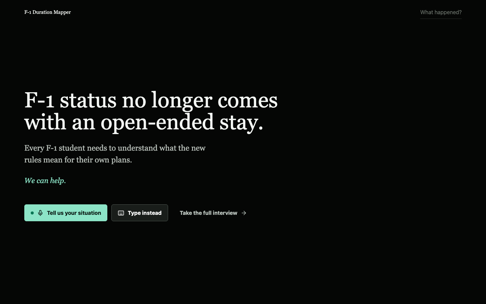
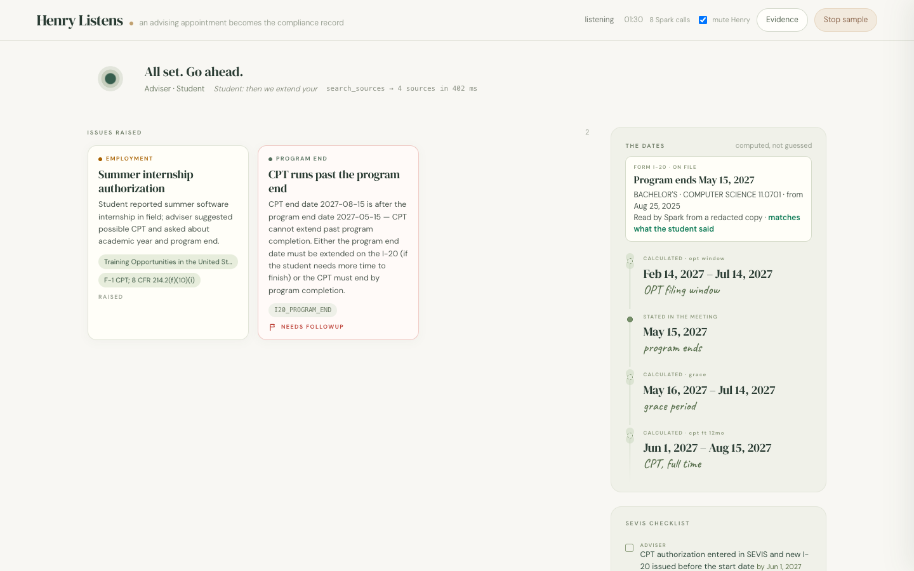
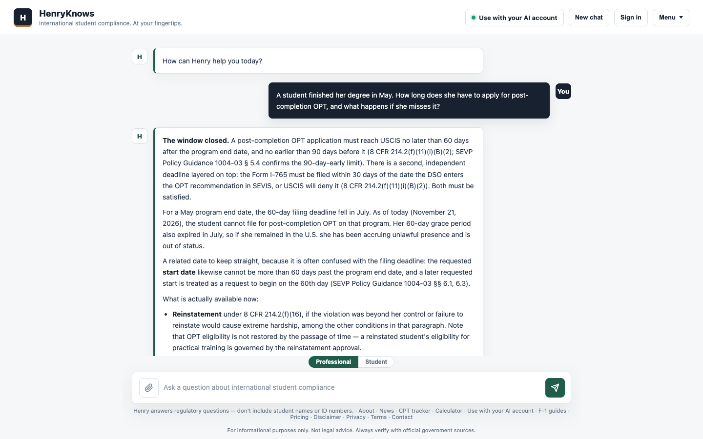
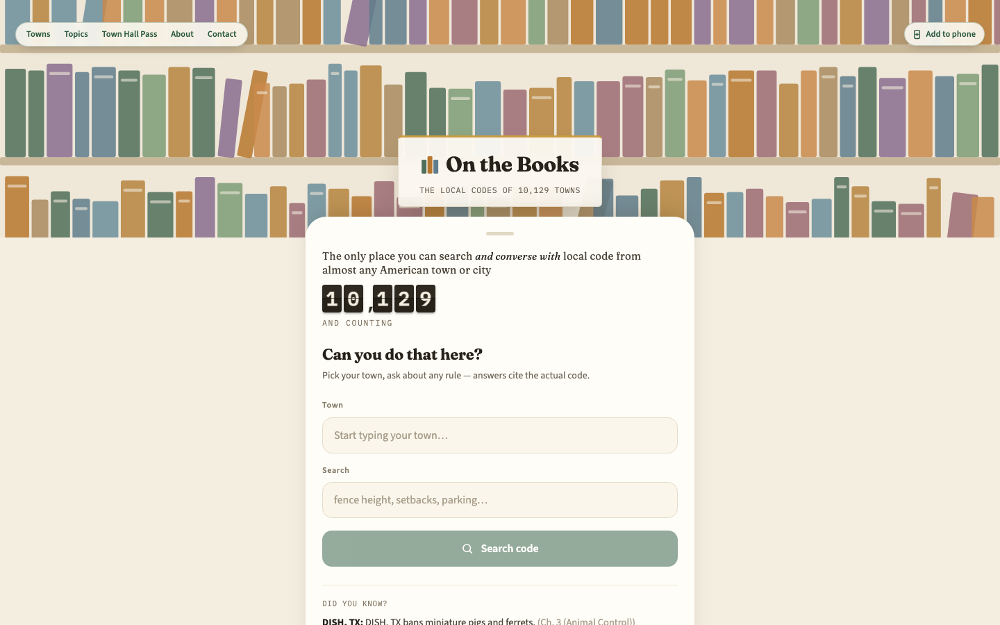
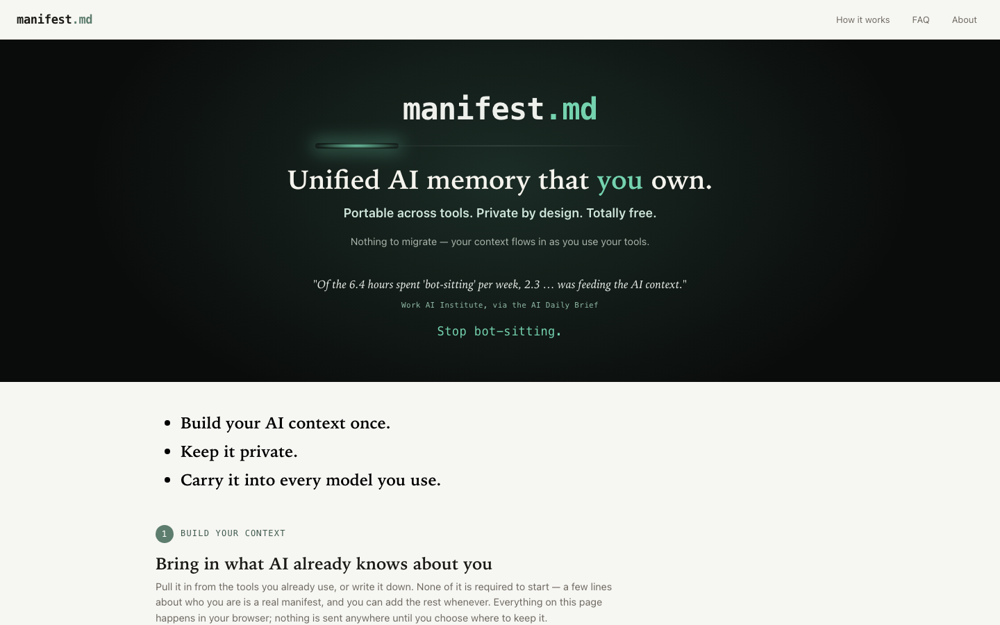

AI tools for work where a wrong answer has consequences.
I have spent 17 years in international education, most of it keeping schools and students on the right side of federal immigration rules. For the last two years I have been building AI tools for that kind of work: rule-heavy, document-heavy, and unforgiving of a confident guess.
- Higher-ed operations and compliance
- J.D.
- Five products live
- Three hackathon builds in 2026
- F-1 Duration MapperA new federal rule, applied to one student's own case
- Henry ListensA live meeting becomes the written compliance record
- HenryKnowsCited answers over 500+ primary regulatory sources
- On the BooksThe local law of 10,000 American towns, in plain English
- Context OSOne set of notes that every AI tool can read
F-1 Duration Mapper
In July 2026 a federal rule replaced the open-ended stay international students had always had with fixed end dates. Every student suddenly needed to know what that meant for their own plans.

The problem
The rule runs to hundreds of pages, and the answer depends on each student's dates, degree level, work authorization and travel. A general-purpose chatbot will happily produce a date. It may be wrong, and a wrong date here can cost someone their legal status.
What I built
A student tells their story by voice or text. The tool shows what it understood, asks for the one missing fact that would change the answer, draws the controlling dates on a timeline, and produces a report in the style an adviser would write, with every statement linked to its source.
How it stays right
- The model only extracts candidate facts. The student confirms or corrects each one.
- Dates and legal consequences come from ordinary code, so the same facts always give the same result.
- The model may explain a result. It cannot change one.
- It refuses ambiguous dates such as 6/2/2029 and never invents an exact day.
A model never calculates a legal result. It reads, it asks, it explains. Code does the arithmetic the student's status depends on.
Henry Listens
An advising appointment should end in a written record: what the student said, what the regulation says, what was advised, and what has to happen next. That record is the first thing cut when the line is out the door.

The problem
The note is what a school stands on in a federal review, and writing it competes with the next student waiting. Recording the meeting and handing it to a model raises a harder question: a student's name and ID numbers would be going to an outside company.
What I built
The tool sits in on the meeting and builds the record while people talk. Issues appear as cards, each with its regulation. Dates land on a calendar. A conflict, such as work dates running past the end of the program, shows up in red and clears when the adviser resolves it.
How it stays safe
- Names and ID numbers are replaced in code before any model hears a word.
- A citation counts only if that exact source came back from a search in the same session. Anything else is marked unverified.
- Every date comes from a date engine, tagged with the rule it applied.
- Nothing can be exported until the adviser and student review each card and the adviser signs.
The model drafts and cites. Code computes every consequence. The adviser decides.
HenryKnows
A reference tool for the people who advise international students. It answers regulatory questions and shows the regulation or agency guidance behind every answer.

The problem
The rules live in federal regulations, agency manuals, policy memos and court orders, and they have changed month to month in 2026. An adviser needs the current answer and needs to be able to check it. A general chatbot gives neither.
What I built
A library of more than 500 primary sources, a search layer over it, and an answer that quotes and links what it relied on. It is also available inside Claude and ChatGPT as a connector, so an adviser can ask from the assistant they already use.
What I had to get right
- Before changing the answer engine, I graded old and new answers blind on a fixed set of questions. The new one shipped only after it won.
- A watcher checks the Federal Register and agency pages every four hours and drafts the update for me to review.
- OpenAI's review rejected the ChatGPT version three times. The fix that passed was a redesign: the tools that answer questions now store nothing.
If the answer cannot show its source, it is not an answer an adviser can use.
On the Books
Can you build that fence, keep those chickens, rent out that room? The answer is in your town's municipal code, which almost nobody can find or read.

The problem
Local law is published town by town, by a handful of different publishers, in formats built for clerks. The same method that worked for federal immigration rules should work here, but at a very different size: thousands of separate law books instead of one.
What I built
One place to search and ask questions of the code of more than 10,000 American towns. Every answer cites chapter and section and links to the town's official published code. It can also compare one question across two or three towns.
What I had to get right
- Coverage is stated as an exact count on the home page, and unknown is shown as unknown.
- Every answer costs money to produce, so each plan and each anonymous visitor has a quota.
- The visitor counter separates people from automated crawlers, because most traffic to a new site is not people.
The same discipline, proven outside my own field: quote the law, cite the section, link the official source.
Context OS and manifest.md
Every new chat starts from zero. People who use several AI tools end up re-explaining who they are and what they are working on, many times a day.

The problem
Each AI product keeps its own memory, and none of them share. I run my own projects across Claude, ChatGPT and Codex, and needed all of them to start from the same understanding without a twenty-message warm-up.
What I built
Context OS is a small set of plain text files plus rules for which ones to load and in what order. Any AI tool can read them. manifest.md is the same idea for non-technical people: one private link that lets Claude or ChatGPT read your notes and save new facts to them.
The decisions that matter
- It is only files. No app to install, nothing to depend on, and the notes stay yours.
- The server behind the link is three small files, published so anyone can read exactly what it does.
- I built it because I needed it, then published it when I kept seeing other people ask for the same thing.
The same six rules show up in everything above.
Model for judgment, code for consequence
A model reads, drafts and explains. Anything a person will be held to, such as a date, a deadline or a legal classification, is computed by ordinary code that gives the same result every time.
Show the source or say you cannot
Every regulatory statement links to the text it came from. A citation the system cannot trace to a real search result is labeled unverified, not quietly kept.
Private details never reach the model
Names and ID numbers are replaced in code first. Demos use invented people. None of the products on this page was built on real student records.
A person signs
These tools draft. They do not file, send or decide. The professional reviews the draft and puts their name on it, and nothing leaves before that.
Test against my own labeled examples
I grade a system against examples I labeled by hand. One tool went from 53% to 76% agreement that way. A later version also scored 76% and was worse. Only reading its written reasons showed it.
Unattended work must fail loudly
Anything that runs on a schedule needs a tested alarm. I keep a register of every scheduled job, what it is for, and whether it ran, after one failed quietly for weeks.
Smaller pieces
Compliance first, then AI.
My career is in higher-education operations and immigration compliance: running a school, building compliance programs from scratch, and serving as the federally designated official responsible for international students' records. I hold a J.D. Before that I produced and reported for public radio.
I am not a software engineer and do not claim to be. Claude and Codex write the code. I decide what the code should do, design how the pieces fit, set the rules it must never break, and test that it holds. In regulated work, those are the decisions that determine whether a tool can be trusted.
What I bring to an AI team is the view from inside the work: I know what a wrong answer costs, what a reviewer will ask for, and what a busy professional will and will not use.